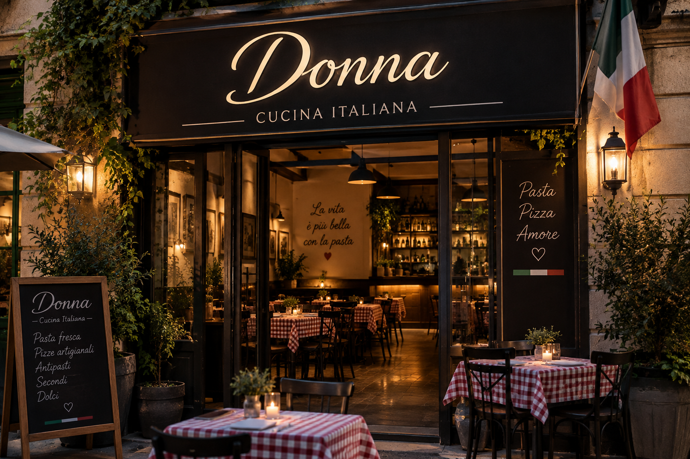

¡Bienvenidos a Donna!
Aquí podrás comer comida 100% italiana. Todas las recetas son de la abuela del dueño. Don Robertto quería hacer realidad que la comida de su abuela pudieran comerla extranjeros.

Aquí podrás comer comida 100% italiana. Todas las recetas son de la abuela del dueño. Don Robertto quería hacer realidad que la comida de su abuela pudieran comerla extranjeros.
